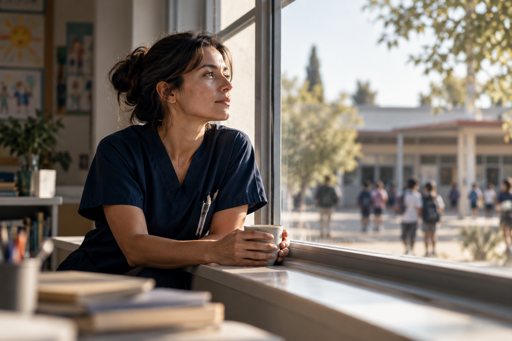

Entrevista · 2026-10-24
Cuidar también es transformar
Natalia Spallino habla de la enfermería que piensa más allá del hospital, de la salud en las escuelas y de los nuevos espacios que imagina para el cuidado.

Si tuvieras que presentarte sin mencionar ninguno de tus cargos, ¿quién es Natalia Spallino y qué cosas de tu historia explican la mujer y profesional que sos hoy?
Si tuviera que presentarme sin mencionar cargos, títulos ni funciones, diría que soy una mujer profundamente curiosa, inquieta y comprometida con el cuidado y con las personas. Soy alguien que necesita encontrar sentido en lo que hace y que, cuando descubre una necesidad o una realidad que puede transformarse, difícilmente pueda mirar hacia otro lado.
Gran parte de quien soy hoy se fue construyendo a través de las personas que encontré en el camino y de las experiencias que me enseñaron que cuidar no significa solamente atender una necesidad cuando aparece, sino también anticiparse, escuchar, acompañar, educar y generar condiciones para que otros puedan desarrollarse mejor.
La enfermería fue una de las grandes puertas de entrada a esa mirada. Me permitió conocer muy de cerca la vulnerabilidad humana, pero también la capacidad de las personas para sobreponerse, aprender y transformar sus circunstancias. Con el tiempo entendí que la salud no puede pensarse solamente desde la enfermedad ni desde lo que sucede dentro de una institución sanitaria. La salud también se construye en las familias, en las escuelas, en las comunidades, en los vínculos y en los espacios cotidianos donde transcurre nuestra vida.
Mi historia también está atravesada por una necesidad permanente de aprender. Muchas veces me encontré buscando respuestas más allá de lo que inicialmente conocía, integrando saberes, explorando nuevas disciplinas y tratando de comprender al ser humano de una manera cada vez más amplia. Esa búsqueda me llevó por diferentes caminos, pero todos terminaron encontrándose en un mismo lugar: la convicción de que el conocimiento tiene verdadero valor cuando puede convertirse en una herramienta para cuidar y transformar.
Creo que también soy el resultado de muchas preguntas. ¿Cómo podemos cuidar mejor? ¿Cómo podemos prevenir antes de que el problema aparezca? ¿Cómo hacemos para que las instituciones sean más humanas? ¿Cómo acompañamos a quienes cuidan? ¿Cómo logramos que la salud forme parte de los espacios donde las personas aprenden, crecen y construyen su futuro?
Muchas de las cosas que hoy impulso nacen de esas preguntas. Y quizás esa sea una de las características que más me definen: no me conformo fácilmente con aceptar que algo “siempre se hizo así”. Cuando encuentro una necesidad, intento comprenderla, estudiarla y pensar cómo podemos hacer algo diferente.
Si tuviera que resumirme en pocas palabras, diría que soy una mujer que aprendió a convertir la inquietud en búsqueda, la búsqueda en conocimiento y el conocimiento en proyectos. Y que, después de muchos años de camino, sigue conservando algo que considero fundamental: la capacidad de emocionarse con una idea, de aprender de los demás y de creer que todavía podemos construir mejores formas de cuidar.
Cuidar y cuidar lo humano es mi esencia.
Cuando hablás de enfermería, ¿qué te gustaría que la sociedad entendiera y todavía no termina de ver?
Me gustaría que la sociedad pudiera comprender que la enfermería es mucho más que una profesión que “asiste” cuando alguien está enfermo. Enfermería es una disciplina del cuidado, con conocimiento científico, capacidad de decisión, responsabilidad y una enorme posibilidad de intervenir antes de que aparezca la enfermedad.
Muchas veces se ve al enfermero o a la enfermera solamente como quien administra una medicación, controla signos vitales, realiza un procedimiento o acompaña al paciente. Todo eso forma parte de nuestro trabajo, pero detrás de cada una de esas acciones existe conocimiento, observación, valoración, toma de decisiones y una responsabilidad enorme sobre la seguridad y el bienestar de las personas.
También me gustaría que pudiéramos visibilizar mucho más el rol de enfermería en la prevención y en la educación para la salud. Enfermería está en contacto con las personas en momentos muy diferentes de sus vidas y puede detectar necesidades, anticipar riesgos, acompañar procesos, promover hábitos saludables y generar autonomía. No solamente intervenimos cuando aparece un problema: también podemos trabajar para que muchos problemas no lleguen a ocurrir.
Y justamente ahí aparece una de las áreas que considero que nuestra sociedad todavía necesita descubrir: la enfermería escolar. En Argentina todavía no contamos con la enfermería escolar como un rol profesional incorporado de manera sistemática en nuestras escuelas, y creo que esa ausencia también muestra cuánto nos falta ampliar la mirada sobre lo que enfermería puede aportar.
La escuela es uno de los lugares donde niños, niñas y adolescentes pasan gran parte de su vida. Es un espacio privilegiado para promover salud, prevenir enfermedades, detectar tempranamente situaciones de riesgo, acompañar a estudiantes con condiciones de salud, trabajar junto a las familias y construir entornos seguros y saludables. Tener enfermería en la escuela no debería significar esperar a que un estudiante se enferme para intervenir; debería significar incorporar el cuidado y la promoción de la salud como parte de la vida cotidiana de la comunidad educativa.
Y hay algo más que considero fundamental: cuando hablamos de enfermería no hablamos solamente de personas que trabajan dentro de un hospital. Enfermería puede estar en una escuela, en una comunidad, en una familia, en espacios laborales, en la gestión, en la investigación y en la educación. Allí donde haya personas y necesidades de cuidado, existe un espacio para enfermería.
Quizás lo que todavía cuesta ver es justamente la dimensión de ese campo profesional. Enfermería no es solamente hacer; también es pensar, planificar, educar, investigar, gestionar, liderar y transformar.
Por eso creo que el desafío no es solamente lograr que la sociedad valore más a enfermería, sino que conozca todo lo que enfermería puede hacer. Y quizás uno de los cambios más importantes sea empezar a imaginar al enfermero no solamente al lado de la cama de una persona enferma, sino también allí donde podemos contribuir a que esa persona permanezca saludable, aprenda, se desarrolle y viva mejor.
¿Por qué la escuela necesita pensar la salud como parte de su vida cotidiana y no solamente como respuesta frente a una emergencia?
Creo que la escuela necesita pensar la salud como parte de su vida cotidiana porque la salud también se aprende. No aprendemos solamente contenidos académicos; aprendemos formas de relacionarnos, de alimentarnos, de cuidar nuestro cuerpo, de expresar lo que sentimos, de pedir ayuda, de reconocer riesgos y de tomar decisiones que pueden acompañarnos durante toda la vida.
Por eso, pensar la salud en la escuela únicamente como una respuesta frente a una emergencia es quedarse con una parte muy pequeña de lo que realmente puede hacerse. Una emergencia requiere, por supuesto, una respuesta adecuada y profesional, pero la mirada de salud debería comenzar mucho antes: en la prevención, la promoción, la educación, la detección temprana y el acompañamiento cotidiano.
La escuela es un espacio privilegiado para esto porque allí transcurren muchos años fundamentales del desarrollo de niños, niñas y adolescentes. Es también un lugar donde pueden detectarse tempranamente situaciones que quizás no son evidentes en otros ámbitos: cambios en la salud, dificultades emocionales, problemas de alimentación, enfermedades crónicas, situaciones de vulnerabilidad, dificultades vinculadas con la convivencia o señales que requieren la intervención de otros profesionales.
En este sentido, la enfermería escolar puede aportar algo muy valioso: transformar el cuidado de la salud en una presencia cotidiana y planificada. No se trata de tener un enfermero en la escuela solamente para atender una herida, controlar una glucemia o responder ante una crisis. Se trata de contar con un profesional que pueda trabajar junto a docentes, directivos, familias y otros integrantes de la comunidad educativa para construir entornos más seguros y saludables.
Desde mi lugar como presidenta de la futura Asociación Civil para el Desarrollo de la Enfermería Escolar en la Provincia de Buenos Aires, uno de los desafíos que más me moviliza es justamente ayudar a instalar esta conversación. Estamos trabajando para que podamos comprender que la enfermería escolar no es simplemente una respuesta sanitaria dentro de la escuela, sino una oportunidad para incorporar una mirada profesional del cuidado al proyecto educativo.
Porque educar y cuidar no son dos caminos separados. Un estudiante que no puede ver bien, que vive con una enfermedad crónica que no está adecuadamente acompañada, que atraviesa una situación emocional compleja o que no encuentra un adulto capacitado que pueda detectar tempranamente lo que le sucede, también puede ver afectado su aprendizaje, su participación y su desarrollo.
Por eso, cuando hablamos de enfermería escolar, para mí no hablamos solamente de salud dentro de la escuela. Hablamos de crear mejores condiciones para aprender, desarrollarse, participar y vivir.
Y quizás esa sea la idea que más me gustaría que podamos instalar: la escuela no debería ocuparse de la salud solamente cuando algo sucede. Debería ser también un lugar donde aprendamos, todos los días, a cuidar y a cuidarnos.
Si pudieras cambiar una sola idea equivocada sobre la enfermería escolar, ¿cuál cambiarías y por qué?
Si pudiera cambiar una idea equivocada, en realidad cambiaría dos que están muy relacionadas: que incorporar enfermería escolar significa transformar la escuela en un hospital y que representa simplemente un costo más para la institución.
Una escuela con enfermería no se convierte en un hospital. La escuela sigue siendo una institución educativa. La diferencia es que incorpora a su comunidad un profesional especializado en cuidado, prevención y promoción de la salud. No se trata de llevar la lógica hospitalaria a la escuela, sino justamente de llevar una mirada de salud a un espacio donde las personas viven, aprenden y se desarrollan.
Tampoco creo que debamos pensar la enfermería escolar solamente desde cuánto cuesta incorporar un profesional. Por supuesto que toda política o estrategia institucional implica recursos y requiere ser planificada. Pero también deberíamos preguntarnos cuánto cuesta no prevenir, cuánto cuesta actuar tarde, cuánto cuesta que una enfermedad crónica se convierta en una barrera para la escolaridad, que una situación de salud mental no sea detectada a tiempo, que una emergencia no tenga una respuesta adecuada o que una familia y una escuela no sepan cómo acompañar una determinada situación.
La enfermería escolar no debería evaluarse solamente como un gasto, sino como una inversión en salud, seguridad, inclusión y mejores condiciones para el aprendizaje. Y para poder sostener esta mirada necesitamos, además, producir evidencia, generar indicadores y evaluar resultados. No alcanza con decir que algo es importante: tenemos que poder demostrar qué aporta.
Por eso me gustaría cambiar esa mirada inicial de “¿para qué necesitamos un enfermero en una escuela si no somos un hospital?”. Yo invertiría la pregunta: si sabemos que la salud influye en el aprendizaje, en la participación y en el desarrollo de nuestros estudiantes, ¿por qué no debería existir un profesional especializado en cuidado dentro de uno de los lugares donde pasan gran parte de su infancia y adolescencia?
Para mí, la enfermería escolar no lleva el hospital a la escuela. Hace algo completamente diferente: lleva el cuidado profesional allí donde las personas aprenden a vivir.
¿Por qué decidiste impulsar y dirigir el Campus Profesional para la Enfermería?
El Campus Profesional para la Enfermería nació de una necesidad muy concreta, pero también de una convicción: si queríamos construir proyectos nuevos para la enfermería, también necesitábamos encontrar formas nuevas de sostenerlos.
La creación y el desarrollo de la Asociación requieren recursos. Y en ese momento nos encontramos con una realidad muy concreta: muchas veces existen buenas ideas y profesionales con ganas de hacer, pero no siempre existen los fondos necesarios para poner esos proyectos en marcha y sostenerlos en el tiempo.
Así nació el Campus, como un emprendimiento que tiene entre sus objetivos generar recursos que permitan acompañar y fortalecer el desarrollo de la Asociación, pero que rápidamente adquirió una identidad propia.
Empezamos a pensar qué podíamos ofrecer que realmente tuviera valor para nuestros colegas. Y encontramos otra necesidad muy clara: hay muchas capacitaciones para enfermería, pero no siempre encontramos propuestas que combinen actualización profesional, calidad académica, herramientas concretas y, al mismo tiempo, un costo que sea accesible para los enfermeros y enfermeras de nuestro país.
Por eso queremos que el Campus sea un espacio de formación pensado desde la realidad de quienes trabajan en enfermería en Argentina. Un lugar donde puedan acceder a contenidos actuales, desarrollados por profesionales con experiencia, sobre temas que muchas veces no están suficientemente abordados en las propuestas tradicionales de capacitación.
También hay algo que para mí es fundamental: que la formación no sea un privilegio. Sabemos que muchos profesionales tienen enormes deseos de seguir estudiando, pero entre los costos, los tiempos laborales y las responsabilidades personales, muchas veces acceder a determinadas propuestas se vuelve muy difícil.
Entonces buscamos desarrollar capacitaciones de calidad, pero con una mirada de accesibilidad. Que un enfermero que está trabajando en un hospital, en una institución de salud, en educación o en cualquier otro ámbito pueda encontrar en el Campus herramientas que le permitan seguir creciendo profesionalmente sin que el costo sea una barrera imposible de atravesar.
Y hay una conexión muy profunda entre el Campus y todo lo que venimos construyendo. La Asociación busca desarrollar nuevos espacios para la enfermería; el Campus busca fortalecer a los profesionales que van a ocupar esos espacios.
Para mí, formar profesionales también es una manera de transformar la enfermería. Cada persona que incorpora una herramienta nueva, que actualiza sus conocimientos, que aprende a investigar, a gestionar, a liderar o a pensar el cuidado de otra manera, puede llevar esa transformación a su lugar de trabajo.
Por eso el Campus no nació solamente como una estrategia para generar recursos. Nació también de una pregunta que me acompaña desde hace muchos años: ¿cómo podemos hacer para que más enfermeros tengan acceso al conocimiento que necesitan para crecer y transformar sus prácticas?
Y esa pregunta es, en definitiva, la que conecta este emprendimiento con todo lo demás que venimos construyendo.
¿Qué proyecto todavía no existe como te gustaría, pero sabés que querés construir?
Hay un proyecto que todavía no existe como me gustaría, pero que hace tiempo tengo ganas de construir: un espacio de medicina y cuidado integral, donde distintas disciplinas puedan trabajar verdaderamente de manera articulada alrededor de la persona.
Mi recorrido profesional me llevó a comprender que la salud no puede pensarse solamente desde la enfermedad. La medicina es fundamental y tiene un lugar irremplazable, pero también necesitamos mirar qué sucede con los hábitos, la alimentación, el descanso, el movimiento, las emociones, el estrés, los vínculos y las condiciones en las que cada persona vive.
Mi formación en enfermería, y posteriormente mi acercamiento al Ayurveda, mindfulness y las neurociencias, fueron ampliando esa mirada. No para reemplazar la medicina científica ni para poner todas las prácticas en el mismo nivel de evidencia, sino para comprender que podemos construir modelos de cuidado más integrales, responsables y centrados en la persona.
Me gustaría crear un espacio donde médicos, enfermeros, nutricionistas, psicólogos, kinesiólogos y otros profesionales puedan trabajar de manera interdisciplinaria, cada uno desde su saber y su responsabilidad, pero con una mirada común: acompañar a la persona y no solamente atender su enfermedad.
Un espacio donde la prevención tenga un lugar central y donde podamos intervenir antes de que el problema aparezca o se agrave. Donde también podamos acompañar a las personas que ya tienen una enfermedad crónica para que puedan vivir mejor con ella y desarrollar mayor autonomía.
Y para mí hay una condición fundamental: que sea un proyecto serio. Cuando hablamos de abordajes integrales no podemos caer en soluciones mágicas ni en propuestas sin fundamento. Quiero integrar conocimientos y prácticas que puedan sostenerse desde la evidencia, la ética profesional y el respeto por las decisiones de cada persona.
Creo que ese proyecto también representa mucho de mi propio recorrido. Después de tantos años en enfermería, de haber estudiado otras disciplinas y de haber transitado diferentes espacios de formación y enseñanza, siento que todas esas experiencias empiezan a encontrarse en una misma idea: no fragmentar a la persona para poder atenderla, sino integrar los saberes para poder cuidarla mejor.
Todavía no existe como me gustaría. Pero sé que es un proyecto que quiero construir, porque creo profundamente que el futuro de la salud necesita cada vez más integración, prevención, interdisciplinariedad y una mirada verdaderamente humana de quienes cuidamos.
Si una persona que nunca se detuvo a mirar el trabajo de una enfermera está leyendo PULSO ahora mismo, ¿qué te gustaría que se lleve de esta conversación?
Me gustaría que se lleve una idea muy sencilla: detrás de cada cuidado de enfermería hay mucho más de lo que se ve.
Cuando alguien ve a una enfermera controlar signos vitales, administrar una medicación, realizar un procedimiento o acompañar a una persona, probablemente vea solamente una parte de lo que está sucediendo. Detrás hay conocimiento científico, observación, pensamiento crítico, decisiones, responsabilidad y también una enorme capacidad humana para estar presente en momentos de mucha vulnerabilidad.
Pero también me gustaría que pueda descubrir que la enfermería no empieza cuando aparece una enfermedad ni termina cuando esa enfermedad se resuelve.
La enfermería también está en prevenir, educar, acompañar, detectar riesgos, ayudar a una persona a recuperar autonomía, trabajar con una familia, cuidar a una comunidad, investigar, gestionar, formar a otros profesionales y construir nuevos espacios de salud.
Quizás, después de leer esta entrevista, alguien pueda mirar de otra manera a la enfermera que tiene cerca. No solamente como “la persona que me atiende”, sino como un profesional que piensa, decide, cuida y que puede tener un papel fundamental mucho antes de que aparezca un problema de salud.
Y me gustaría que también quede algo de nuestra conversación sobre la enfermería escolar. Porque creo que resume muy bien hacia dónde tenemos que ir: no esperar siempre a que alguien enferme para empezar a cuidar. Llevar el cuidado allí donde las personas viven, aprenden, trabajan y se desarrollan.
Si tuviera que dejarle una sola frase a esa persona, sería esta:
La próxima vez que veas a una enfermera, quizás puedas mirar un poco más allá de lo que está haciendo y preguntarte todo lo que tuvo que aprender, decidir y sostener para poder cuidar de esa manera.
Porque cuando comprendemos todo lo que hay detrás de la enfermería, también empezamos a comprender el verdadero valor del cuidado.
¿Qué invitación concreta querés hacerle a quien leyó esta entrevista y siente que también puede ser parte de esta transformación?
Le diría que no espere a que las condiciones sean perfectas para empezar.
Si algo de esta entrevista le generó una pregunta, una inquietud o incluso ganas de hacer las cosas de otra manera, ya tiene un punto de partida. La transformación de la enfermería no depende solamente de grandes instituciones o de quienes ocupamos determinados lugares. También se construye todos los días desde una práctica, una investigación, una capacitación, una propuesta, una conversación o una idea que alguien se anima a llevar adelante.
A los profesionales de enfermería les diría: fórmense, investiguen, pregunten, propongan y anímense a ocupar espacios nuevos. No esperemos siempre que otros definan hasta dónde podemos llegar.
A quienes están estudiando enfermería les diría que no piensen solamente en el lugar donde van a trabajar cuando se reciban. Piensen también en los espacios que todavía no existen y que ustedes pueden ayudar a construir.
Y a quienes no son enfermeros pero creen en esta transformación, les diría que también necesitamos de ustedes. Necesitamos que conozcan nuestra profesión, que nos acompañen, que abran espacios de diálogo y que entiendan que cuidar la salud es una responsabilidad colectiva.
En nuestro caso, estamos construyendo la Asociación, desarrollando el Campus, formando profesionales y pensando nuevos modelos de cuidado porque creemos que la enfermería tiene mucho más para aportar.
Pero esto no debería ser solamente nuestro proyecto.
Mi invitación concreta sería: si alguna vez pensaste que algo en la enfermería, en la salud o en la manera de cuidar podría hacerse mejor, no te quedes solamente con esa idea. Buscá con quién compartirla y empezá a construirla.
Porque las transformaciones que hoy parecen lejanas muchas veces comienzan así: con una persona que se anima a decir “¿y si lo hacemos de otra manera?”.
Y quizás esa sea, justamente, la invitación que quiero dejar: no solamente mirar la transformación desde afuera, sino animarse a ser parte de ella.
Fuentes
- Fuente de texto: entrevista escrita original y edición editorial de PULSO.
- Esta edición selecciona ocho intercambios de una entrevista escrita más extensa. Las respuestas se reproducen sin inventar contenido; se ordenaron temáticamente y se normalizaron únicamente los espacios tipográficos. Las preguntas sin respuesta no forman parte de la pieza.
- Transparencia editorial: Natalia Spallino desarrolla actividades vinculadas con el Campus Profesional para la Enfermería y la Asociación Civil para el Desarrollo de la Enfermería Escolar, iniciativas mencionadas en esta entrevista. La autorización de publicación textual y de identidad fue comunicada verbalmente por el Director de PULSO; no se extiende automáticamente a fotografía, audio, video ni redes. PULSO conserva la selección, verificación y decisión editorial independiente.